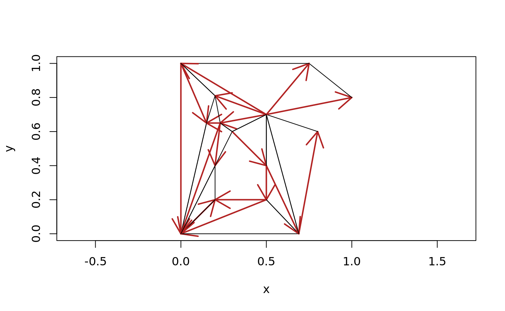

decido - polygon triangulation by ear clipping
Michael D. Sumner
2020-05-19
Source:vignettes/decido.Rmd
decido.RmdConstrained triangulation of polygons
Decido aims to provide very fast constrained triangulations for polygons using a robust C++ library created by Mapbox.
Constrained triangulation by ear clipping is an important low-cost method for decomposing a polygon into triangles, used for 3D visualization and many analytical techniques. Here constrained means shape-preserving, in the sense that every edge of the polygon will be included 1 as the edge of a triangle in the result.
Ear clipping (or cutting) must be applied to a path-based polygon that consists of only one island, with zero or more holes. Any multiple island polygons must be triangulated separately by this method.
The better-known Delaunay triangulation is generally not shape-preserving as it works only on points, without knowledge of input line segments or polygon edges. Shape-preserving Delaunay or more commonly near-Delaunay triangulation is performed on a set of edges rather than paths, and can be performed on multiple polygons at once. Holes require careful trimming of triangles after the decomposition is performed in this approach. (See the anglr package for the DEL0() function for high-quality triangles, with control over size, angle, and the Delaunay criterion).
Example
This is a basic example of triangulating a single-ring polygon. The output is a vector of triplet indices defining each triangle.
library(decido) x <- c(0, 0, 0.75, 1, 0.5, 0.8, 0.69) y <- c(0, 1, 1, 0.8, 0.7, 0.6, 0) (ind <- earcut(cbind(x, y))) #> [1] 2 1 7 7 6 5 5 4 3 2 7 5 5 3 2 plot_ears(cbind(x, y), ind)

Support for holes is provided by the argument holes. The values are the starting index of each hole, here in R’s 1-based convention.
## polygon with a hole x <- c(0, 0, 0.75, 1, 0.5, 0.8, 0.69, 0.2, 0.5, 0.5, 0.3, 0.2) y <- c(0, 1, 1, 0.8, 0.7, 0.6, 0, 0.2, 0.2, 0.4, 0.6, 0.4) ind <- earcut(cbind(x, y), holes = 8) plot_ears(cbind(x, y), ind)

The hole-specification is a little subtle, since usually R’s functions (polygon and polypath, and others) expect NA values to separate paths.
Notice how the hole begins at index 8, hence holes = 8 above, and holes = c(8, 13) below.

The method is subtle.
This example adds a third polygon, a second hole in the island.
## add another hole x <- c(0, 0, 0.75, 1, 0.5, 0.8, 0.69, 0.2, 0.5, 0.5, 0.3, 0.2, 0.15, 0.23, 0.2) y <- c(0, 1, 1, 0.8, 0.7, 0.6, 0, 0.2, 0.2, 0.4, 0.6, 0.4, 0.65, 0.65, 0.81) ind <- earcut(cbind(x, y), holes = c(8, 13)) plot_ears(cbind(x, y), ind, col = "grey")

Performance for developers
There is a headers API for decido.
## this code is not run in the vignette ## but can be run as is with decido installed library(Rcpp) cppFunction( depends = "decido" , includes = '#include "decido/decido.hpp"' , code = ' Rcpp::IntegerVector earcut0( SEXP polygon ) { return decido::api::earcut( polygon ); } ' ) poly <- list(matrix(c(0,0,0,1,1,1,1,0,0,0), ncol = 2, byrow = T)) earcut0( poly ) # [1] 1 4 3 3 2 1
Orientation
Triangles are returned in counter-clockwise order, as is proper and good in a world where area is positive (I’m kidding, it’s just a convention that folks use … see fortunes::fortune("illogical")).
First a function so I can show this with a plot.
## plot triangles (input is triplets of xy coordinates) ## with one side an oriented arrow plot_tri <- function(x, add = TRUE) { if (!add) plot(x, asp = 1, type = "n") idx <- c(1:3, 1) for (i in seq_len(nrow(x)/3)) { #print(idx) ## plot only the first arrow arrows(x[idx[1], 1], x[idx[1], 2], x[idx[2], 1], x[idx[2], 2], length = 0.25, lwd = 2, col = "firebrick") ## segments the rest segments(x[idx[2:3], 1], x[idx[2:3], 2], x[idx[3:4], 1], x[idx[3:4], 2]) idx <- idx + 3 } }
See how each triangle has its first edge (the first two indexes) shown as an arrow. They’re all counter-clockwise. I’ve checked this on very large sets of real-world inputs, you can get 0-area polygons and very small negative-epsilon area polygons when the 3 points are collinear or so close to it that numeric precision fails us.
plot_tri(cbind(x, y)[ind, ], add = FALSE)

(See this discussion for more on the topic where I was exactly backwards on the counter-clockwise thing, but airing the topic was very helpful).
Orientation is not really important in planar contexts, though you’ll find very little consensus on this. (Would it not be handy if all holes in polygons had negative area …). It really matters in 3D because the orientation has a more definite meaning when the triangles are representing surfaces.
Comparing paths and triangles
This example defines a much simpler shape, the minimal shape able to be decomposed to triangles (and not stay a triangle).
A quadrilateral, with two holes that are open to each other allows the use of the same data, and we can tweak whether we wanted one hole or two. This is an important example used for validating early versions of this package.
x <- c(0, 0, 1, 1, 0.4, 0.2, 0.2, 0.4, 0.6, 0.8, 0.8, 0.6 ) y <- c(0, 1, 1, 0, 0.2, 0.2, 0.4, 0.4, 0.6, 0.6, 0.4, 0.4 ) ind <- decido::earcut(cbind(x, y), holes = c(5, 9)) plot_ears(cbind(x, y), ind, col = "grey") title("triangle plot, two holes")

plot_holes(cbind(x, y), holes = c(5, 9), col = "grey") title("path plot, two holes")

ind <- decido::earcut(cbind(x, y), holes = 5) plot_ears(cbind(x, y), ind, col = "grey") title("triangle plot, two holes as one")

plot_holes(cbind(x, y), holes = 5, col = "grey") title("path plot, two holes as one")

A geographic example
For good measure we include a geographic example, a triangulation of the mainland part of Tasmania from the oz package.
library(oz) oz_ring <- oz::ozRegion(states = FALSE) ring <- oz_ring$lines[[6]] indices <- earcut(ring[c("x", "y")]) plot_ears(cbind(ring$x, ring$y), indices)

Variants
The actual triangulation obtained depends on where the polygons start. This is complicated, because of the sheer number of possible variants, combinations of starting points among the island and its holes.
Important “edge” cases are degeneracies, holes touching the island or each other, duplicated edges, intersecting edges, zero-length edges, holes actually external to islands, already existing triangles, and existing quadrilaterals (amongst others). We aren’t going to explore those here, and we are reasonably confident that Mapbox has been presented with a rich enough pool of variant polygons to make its library pretty robust. There’s no uniquely “correct” here either, different systems and standards will apply different rules and allow or choose differently.
First a function to “rotate” coordinates to different start/end.
vecrot <- function(x, k) { if (k < 0 || k > length(x)) warning("k out of bounds of 'x' index") k <- k %% length(x) ## from DescTools::VecRot rep(x, times = 2)[(length(x) - k + 1):(2 * length(x) - k)] }
Now plot each possible variant of defining the polygon ring by traversing the boundary anti-clockwise from a different starting vertex, shown as a filled point symbol.
x <- c(0, 0, 0.75, 1, 0.5, 0.8, 0.69) y <- c(0, 1, 1, 0.8, 0.7, 0.6, 0) (ind <- earcut(cbind(x, y))) #> [1] 2 1 7 7 6 5 5 4 3 2 7 5 5 3 2 plot_ears(cbind(x, y), ind) points(x[1], y[1], pch = 19, col = "firebrick") title("original")

op <- par(mfrow = c(2, 3)) for (rot in head(seq_along(x), -1)) { xx <- vecrot(x, rot); yy <- vecrot(y, rot) ind <- earcut(cbind(xx, yy)) plot_ears(cbind(xx, yy), ind) title(sprintf("rot %i", rot)) points(xx[1], yy[1], pch = 19, col = "firebrick") }

par(op)
Compare this to constrained Delaunay triangulation from the RTriangle package (not illustrated here but the result is that the constrained triangulation is different from all variants above, and the conforming triangulation inserts two points not included in the original data - these are called Steiner points).
library(sfdct) library(sf) xsf <- st_sfc(st_polygon(list(cbind(x, y)[c(seq_along(x), 1), ]))) plot(ct_triangulate(xsf, Y = TRUE)[1], col = NA) ## now a conforming Delaunay triangulation plot(ct_triangulate(xsf, D = TRUE)[1], col = NA)
Performance
Compare timing of C++ versus JS implementations, the original C++ decido was born from the Javascript version ‘rearcut’. With version 0.3.0 decido gained a C++ headers API thanks to David Cooley.
ring <- remotes::install_github("hypertidy/rearcut") library(Rcpp) ## some people love to see the world burn by ## ignoring indexes and working purely in coordinates ... cppFunction( depends = "decido" , includes = '#include "decido/decido.hpp"' , code = ' Rcpp::IntegerVector earcut0( SEXP polygon ) { return decido::api::earcut( polygon ); } ' ) dim(ring <- decido:::ant_cont ) rbenchmark::benchmark(js = rearcut::earcut(ring), decido = decido::earcut(ring), headers_decido = earcut0(list(ring))) # test replications elapsed relative user.self sys.self user.child sys.child # 2 decido 100 0.304 1.924 0.305 0.000 0 0 # 3 headers_decido 100 0.158 1.000 0.158 0.000 0 0 # 1 js 100 6.876 43.519 6.818 0.148 0 0
[1]: See [https://hypertidy.github.io/sfdct/reference/ct_triangulate.html#examples] of st_triangulate vs ct_triangulate on a set of polygons, the unconstrained version does not include all the polygon edges, the boundaries are the convex of each polygon and so each triangle collection is overlapping.
1↩︎